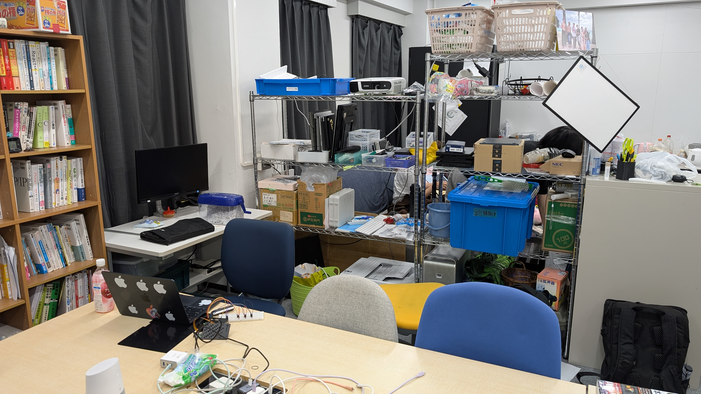
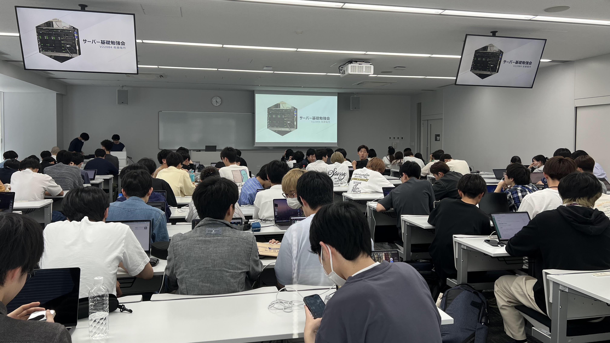

おしらせ
2025/7/4
総会
7月16日に総会を行います.
2025/7/4
購入品
本を新しく購入しました.
2025/7/3
受賞報告
技育CAMPハッカソン Vol.4にて最優秀賞を受賞しました.
団体概要
| サークル名 | システム工学研究会(通称シス研) |
| 創設年 | 1976年 |
| 会員数 | 267名(2025年) |
シス研は,愛知工業大学公認の情報系サークルです.
所属している学生は,情報科学部が大多数を占めますが,工学部の学生も2割ほど加入しています.
サークルのメンバーでチームを組んでハッカソンに挑戦したり,放課後に集まって一緒に課題をやったりして,技術に触れながら自由に活動しています.

活動について

4号館1階にある部室を午前9時から午後10時まで自由に利用することができ,気楽に集まって活動しています.
活動内容は,ハッカソンへの参加や工科展･TOKYO GAME SHOWへの出展,勉強会の開催,BBQやクリスマス会等のの交流会,サーバーの管理など多岐にわたります.
使用技術
- Webサイト･Webアプリケーションの制作
- Unityを用いたゲーム開発
- BlenderやMayaを用いた3Dモデリング
- Raspberry PiやAruduino,ESP32などを使った組み込みシステムの開発
- モバイルアプリの開発
- サーバー運用
など